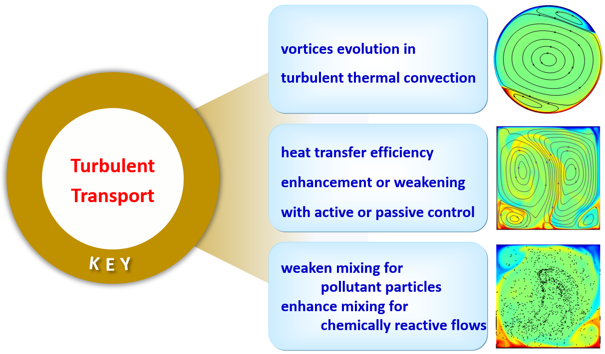
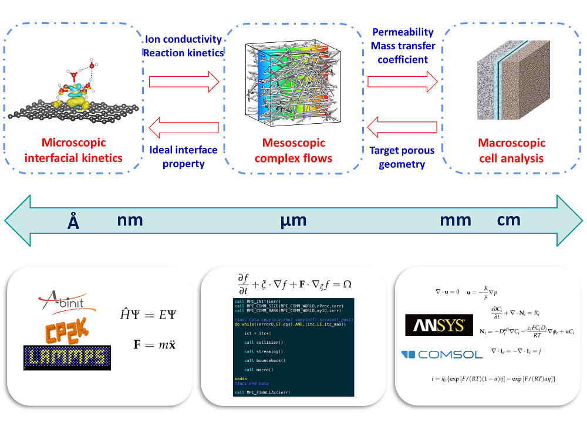

{{ page.hero_title }}
{{ page.hero_intro }}
-
{% for topic in page.hero_meta %}
- {{ topic }} {% endfor %}
Research Interests
Turbulence and Transport
As an associate professor at Northwestern Polytechnical University, I study turbulence structure and transport mechanisms, with a focus on:
- Flow structures. Vortex evolution in turbulent thermal convection, particularly during flow reversal.
- Heat transport. Heat transfer mechanisms and active or passive flow controls to enhance or suppress heat transfer.
- Mass transport. Controlling mixing to limit pollutant dispersion or enhance chemically reactive flows.

Multiscale Modeling
My PhD research focused on mesoscopic modeling with the lattice Boltzmann method (LBM), including gas-liquid two-phase flows, particulate flows and flows in porous media.
These simulations draw on high performance computing (HPC), including OpenMP, MPI and OpenACC.
During my postdoc at HKUST, I extended this work to microscopic simulations: molecular dynamics (MD) for intrinsic transport properties, and density functional theory (DFT) for adsorbates on surfaces.

Projects
Current & Upcoming
-
2027.01 - 2030.12Upcoming
地形-热力-剪切协同作用下湍流结构演化及自推进体智能响应
国家自然科学基金面上项目 12672289Publications
(Target) 6-8 papers(Completed) 0 papers:
(Coming..) 0 papers: -
2026.01 - 2027.12Active
湍流结构与热-质输运
中央高校基本科研业务费 D5000260269Publications
(Target) 3-5 papers(Completed) 0+0+0+0+1 papers:
i) JFM2026_LearningTraverseConvective_R5;
(Coming..) 0+0+0+0+1 papers:
i) SUBMITTED2026_BuoyancyInducedVelocity_R5; -
2025.07 - 2028.07Active
省青年拔尖人才项目
-
2024.12 - 2027.12Active
无人机敏捷飞行技术
JKW173计划重点项目 -
2024.01 - 2028.12Active
极端流动的多过程问题研究
国家自然科学基金基础科学中心项目 12388101Publications
(Target) 8 papers(Completed) 1+4+2 papers:
vii) JFM2026_LearningTraverseConvective_R2; vi) POF2026_TriggeringExtremeEvents_R1; v) JFM2026_SuperResolutionReconstruction_R2; iv) IJHMT2026_InterpolationSupplementedLattice_R2; iii) JFM2025_TemporalModulationMixed_R3; ii) JFM2024_ParticleTransportDeposition_R3; i) JFM2024_PrandtlNumberDependence_R2;
(Coming..) 1+1 papers:
ii) SUBMITTED2026_BuoyancyInducedVelocity_R2; i) AMS2026_RevisitEddyViscosity_R1; -
2023.01 - 2026.12Active
热湍流中颗粒的被动迁移及主动推进
国家自然科学基金面上项目 12272311Publications
(Target) 6-8 papers(Completed) 9+2 papers:
xi) JFM2026_LearningTraverseConvective_R1; x) POF2026_TriggeringExtremeEvents_R2; ix) JFM2026_SuperResolutionReconstruction_R1; viii) IJHMT2026_InterpolationSupplementedLattice_R1; vii) JFM2025_TemporalModulationMixed_R1; vi) JFM2024_ParticleTransportDeposition_R1; v) IJHMT2024_ParticleResolvedThermal_R1; iv) PRF2023_PoreScaleStatistics_R1; iii) JFM2023_WallShearedThermal_R1; ii) PRF2023_LongDistanceMigration_R1; i) IJHMT2023_MultiGPUThermal_R2;
(Coming..) 1+1 papers:
ii) SUBMITTED2026_BuoyancyInducedVelocity_R1; i) AMS2026_RevisitEddyViscosity_R2;
Completed
-
2024.01 - 2026.12Completed
中国科协青年人才托举工程
2023QNRC001Publications
(Target) 6 papers(Completed) 0+0+2+5 papers:
vii) JFM2026_LearningTraverseConvective_R4; vi) POF2026_TriggeringExtremeEvents_R4; v) JFM2026_SuperResolutionReconstruction_R4; iv) IJHMT2026_InterpolationSupplementedLattice_R3; iii) JFM2025_TemporalModulationMixed_R4; ii) JFM2024_ParticleTransportDeposition_R4; i) JFM2024_PrandtlNumberDependence_R3;
(Coming..) 0+0+1+1 papers:
ii) SUBMITTED2026_BuoyancyInducedVelocity_R4; i) AMS2026_RevisitEddyViscosity_R3; -
2024.10 - 2026.04Completed
集群无人机飞行控制技术
JKW173计划技术领域基金项目 -
2024.06 - 2025.09Completed
气隙域涡流性能测试系统及平台设计、试验
中国船舶重工集团公司第七〇四研究所 -
2021.01 - 2022.12Completed
格子Boltzmann水滴结冰模型的发展及其应用
国防KGJ实验室基金Publications
(Target) 2-3 papers(Completed) 0+0+2 papers:
ii) IJHMT2024_ParticleResolvedThermal_R3; i) IJHMT2023_MultiGPUThermal_R3; -
2020.06 - 2022.12Completed
湍热对流拟序结构作用下颗粒运动规律的研究
国防KGJ某重大工程青年项目Publications
(Target) 2-3 papers(Completed) 0+0+4+1 papers:
v) PRF2023_LongDistanceMigration_R3; iv) IJHMT2023_MultiGPUThermal_R4; iii) POF2022_MigrationSelfPropelling_R3; ii) POF2022_ProductionTransportVorticity_R3; i) POF2020_CorrelationInternalFlow_R3; -
2020.01 - 2022.12Completed
基于格子Boltzmann方法的三维热对流中非球形固体颗粒运动规律研究
国家自然科学基金青年科学基金项目 11902268Publications
(Target) 3-5 papers(Completed) 7+2+1 papers:
x) IJHMT2024_ParticleResolvedThermal_R2; ix) IJHMT2023_MultiGPUThermal_R1; viii) POF2022_MigrationSelfPropelling_R1; vii) POF2022_ProductionTransportVorticity_R1; vi) JFM2022_CounterFlowOrbiting_R3; v) JFM2021_TristableFlowStates_R1; iv) POF2020_CorrelationInternalFlow_R1; iii) POF2020_TransportDepositionDilute_R1; ii) IJHMT2020_CurvedLatticeBoltzmann_R2; i) POF2019_StatisticsTemperatureThermal_R1; -
2020.01 - 2021.12Completed
基于格子Boltzmann方法的超疏水表面过冷水滴结冰介观机理研究
国防KGJ重点实验室基金 -
2019.01 - 2021.12Completed
羽流作用下固体颗粒运动规律的研究
中央高校基本科研业务费 D5000200570
Conferences and Talks (Selected)
Conferences
-
2026.08.07 - 12Hong KongWall modeled large eddy simulation of turbulent channel flow with unstable stratificationThe 32nd International Conference on Computational & Experimental Engineering and Sciences Invited [PDF]
-
2026.08.07 - 11Qingdao高瑞利数热湍流中自驱动体的主动推进第十四届全国流体力学学术会议 Invited [PDF]
-
2026.07.10 - 12Mianyang不稳定热分层槽道流的壁面模化大涡模拟2026年壁湍流基础问题青年学术研讨会 Oral
-
2026.06.26 - 28Datong湍流结构与热-质输运2026第四届六校力学学术论坛 Oral
-
2026.06.01 - 05LyonLearning to traverse convective flows at moderate to high Rayleigh numbers10th International Conference on Rayleigh-Bénard Turbulence (第十届瑞利-伯纳德湍流国际会议) Oral
-
2025.12.26 - 28Shenzhen不稳定热分层槽道流的壁面模化大涡模拟稀薄气体与湍流的多尺度非平衡流动学术研讨会 Oral
-
2025.11.28 - 30Beijing热湍流中自驱动体的主动推进中国力学学会青年托举人才与导师交流会 Oral
-
2025.11.22 - 23Lanzhou热湍流结构与物质输运四校力学论坛-2025 Oral
-
2025.11.14 - 16Shanghai热湍流中自驱动体的主动推进第十四届全国流体力学青年研讨会 Oral
-
2025.10.31 - 11.02Xi'an剪切热湍流的研究进展第二届极端流动与多过程问题研讨会 Oral
-
2025.10.24 - 26Hangzhou热湍流中自驱动颗粒的主动推进第四届全国多相流青年学者研讨会 Invited [PDF]
-
2025.09.01 - 02BeijingParticle transport and deposition in wall-sheared thermal turbulenceJFM/FLOW Symposium China 2025 (JFM/FLOW 2025中国专题研讨会) Invited [PDF]
-
2025.07.18 - 21Changsha热湍流结构与颗粒输运中国力学大会-2025 (流体力学分会场) Invited [PDF]
-
2025.07.20Changsha复杂流动与传热传质的格子玻尔兹曼模拟AMS创刊40周年座谈会暨力学学科前瞻研讨会 Invited [PDF]
-
2025.04.19 - 20Nanchang剪切热湍流中颗粒的输运与沉积2025年全国湍流与流动稳定性专题研讨会 Invited [PDF]
-
2025.02.26Xi'anParticle transport and deposition in wall-sheared thermal turbulence多相流数值模拟前沿进展研讨会 Oral
-
2024.10.25 - 27NingboParticle transport and deposition in wall-sheared thermal turbulenceInternational Symposium on Multiphase Flows - 2024 (国际多相流学术研讨会) Invited [PDF]
-
2024.09.20 - 22Taiyuan剪切热湍流结构演化与颗粒输运2024流固耦合前沿问题及无网格方法应用研讨会 Oral
-
2024.09.18 - 19Xi'anTemporal modulation on mixed convection in turbulent channelsWorkshop on Theory and Modeling of Fluid Excitation (流体激励理论与建模研讨会) Oral
-
2024.08.21 - 23BeijingParticle transport and deposition in wall-sheared thermal turbulence2nd BICTAM-CISM Symposium on Dispersed Multiphase Flows (第二届北京国际力学中心与意大利国际力学中心离散多相流研讨会) Oral
-
2024.08.09 - 13Harbin热湍流中颗粒的主动推进第十三届全国流体力学学术会议 (湍流与稳定性分会场) Invited [PDF]
-
2024.08.05Lanzhou剪切热湍流结构演化与颗粒输运“多相流多过程耦合流动”学术研讨会 Oral
-
2024.08.02 - 04Lanzhou时变壁面温度对槽道湍流结构演化的影响2024壁湍流基础问题青年学术研讨会 Oral
-
2023.10.16 - 20Xi'anSelf-propelling Particles Surfing in Turbulent Thermal Convection9th International Conference on Rayleigh-Bénard Turbulence (第九届瑞利-伯纳德湍流国际会议) Oral
-
2023.08.08 - 12BeijingMigrating of a Self-propelling Particle in Thermal Turbulence17th Asian Congress of Fluid Mechanics (第十七届亚洲流体力学大会) Oral
-
2023.07.07 - 11LanzhouControl the Migration of Self-propelling Particle in Thermal TurbulenceIUTAM Symposium on Turbulent Structure and Particles-Turbulence Interaction (国际理论与应用力学联合会湍流结构及颗粒-湍流相互作用研讨会) Oral
-
2023.04.19Hong KongEnergy-efficient propulsion of self-propelling particle in turbulent environmentsBilateral Academic Conference between NPU and HKUST (西北工业大学与香港科技大学双边学术会议) Invited [PDF]
-
2023.04.14 - 17Ningbo湍流场中自驱动颗粒的节能推进2023年全国湍流与流动稳定性专题研讨会 Keynote [PDF]
-
2022.11.18 - 21Xi'an (Hybrid)湍流场中自驱动颗粒的节能推进第十二届全国流体力学学术会议 (湍流与稳定性分会场) Invited [PDF]
-
2022.11.05 - 10Online二维圆形对流腔中的大尺度环流反转中国力学大会-2021+1 Oral
-
2020.01.03BeijingLBM多功能数值模拟软件的开发及其在室内污染物颗粒防治中的应用“自然环境湍流两相流的高精度计算仿真”研讨会 Oral
-
2019.09.03 - 05Xi'anThermal effects on the sedimentation behavior of elliptical particlesWorkshop on Multiphase Flow Computations and Fluid Flow Physics (多相流动计算方法及流体物理学术研讨会) Oral
-
2018.12.07Xi'anA three-dimensional pseudo-potential-based lattice Boltzmann model for multiphase flows with large density ratio and variable surface tensionWorkshop on Multiphase Flow and Free Surface Dynamics (多相流及自由面动力学研讨会) Oral
-
2018.08.10 - 15BeijingEffect of fiber orientation on the effective mass diffusivity of fibrous porous media16th International Heat Transfer Conferences (第十六届国际传热大会) Oral
University Seminars
-
2023.12.18Shenzhen湍流场中自驱动颗粒的节能推进南方科技大学机械与能源工程系 Seminar
-
2021.09.25Online热湍流中大尺度环流反转的机制工程建模与科学计算湖北省重点实验室 Seminar
-
2019.05.08Wuhan基于格子Boltzmann方法的热对流模拟华中科技大学数学与统计学院 Seminar
-
2017.09.18BeijingLattice Boltzmann Modeling of Complex Multiphase Transport Phenomena in Fuel Cells and Flow Batteries清华大学热能系 Seminar
-
2017.09.15HefeiLattice Boltzmann Modeling of Complex Multiphase Transport Phenomena in Fuel Cells and Flow Batteries中国科学技术大学热科学和能源工程系 Seminar